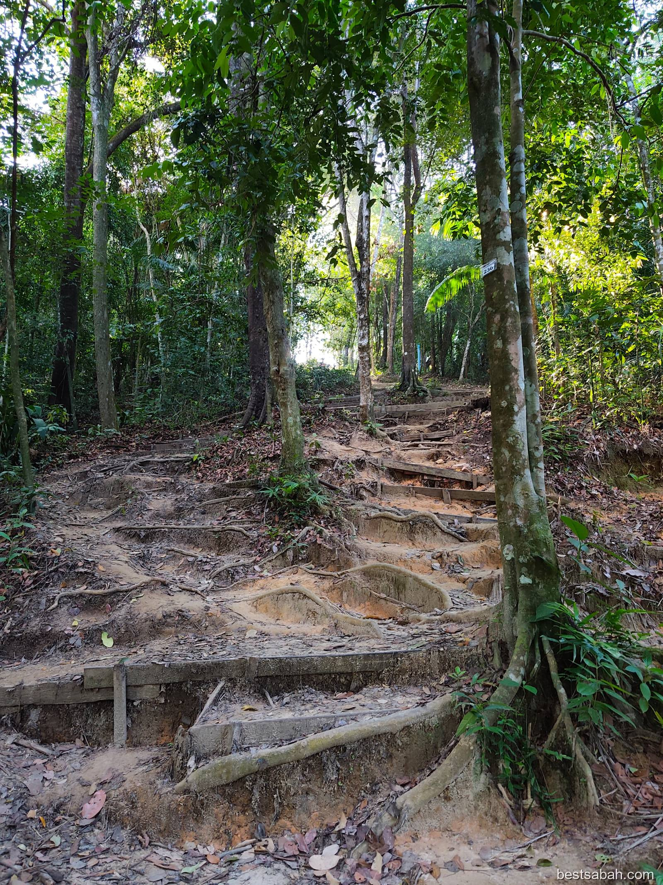
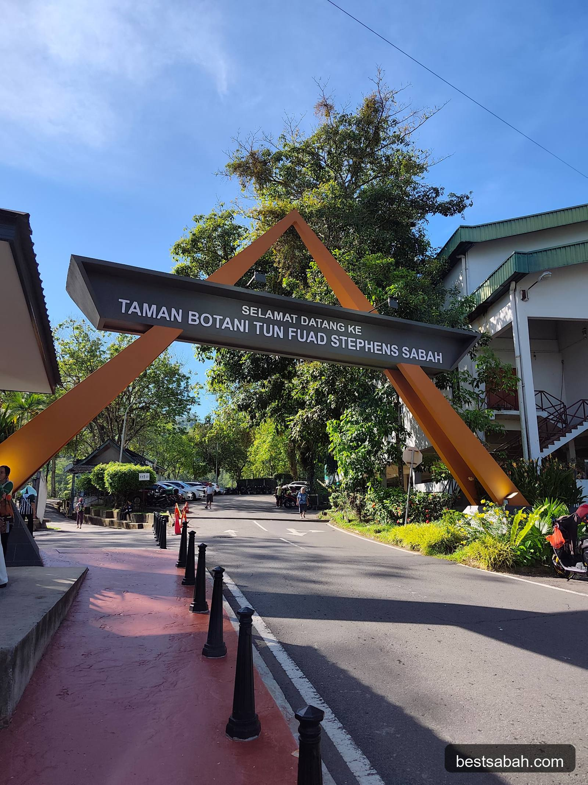
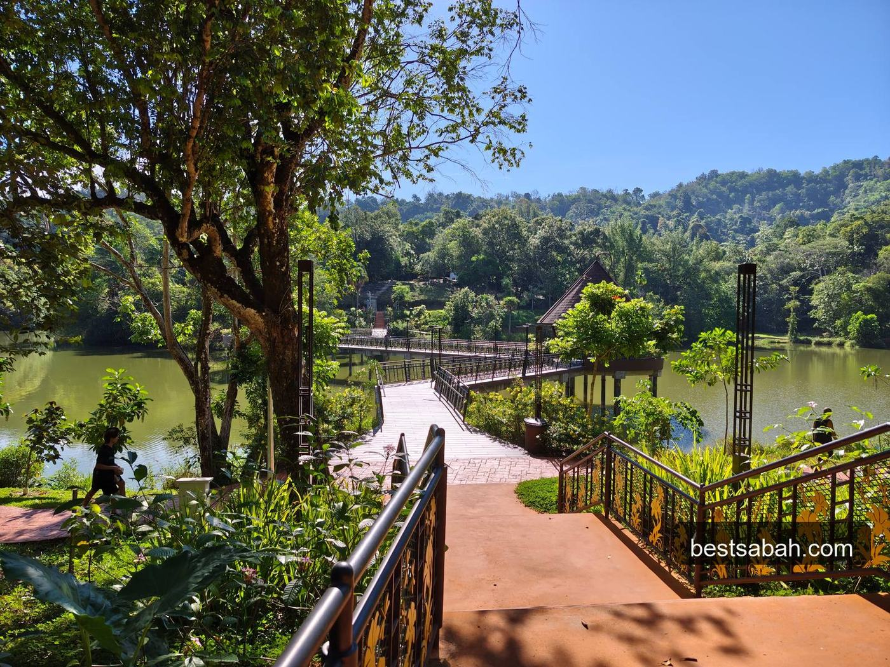
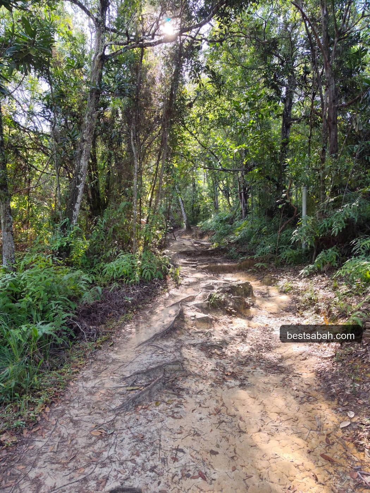
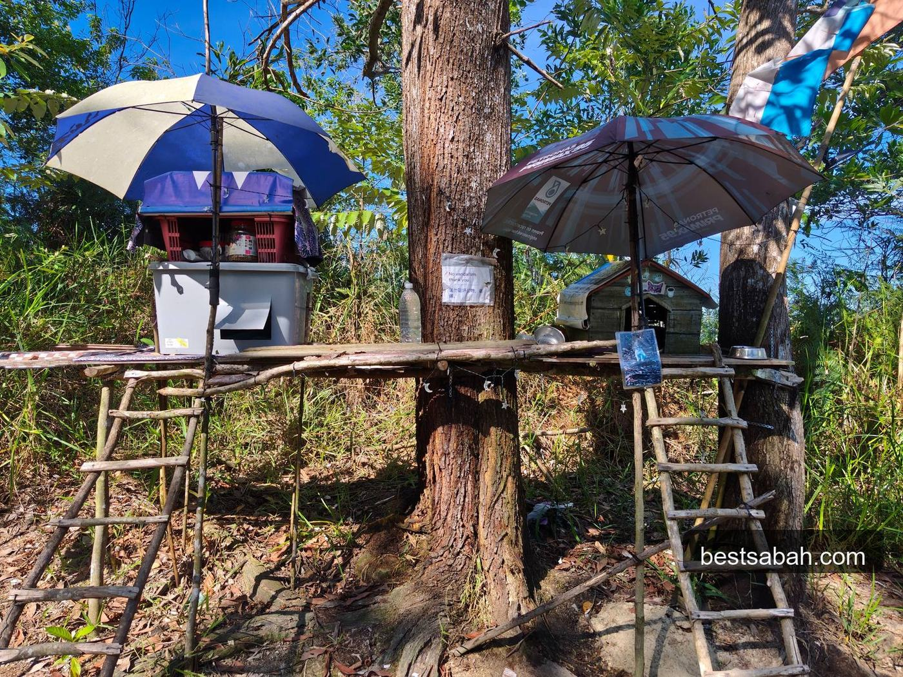
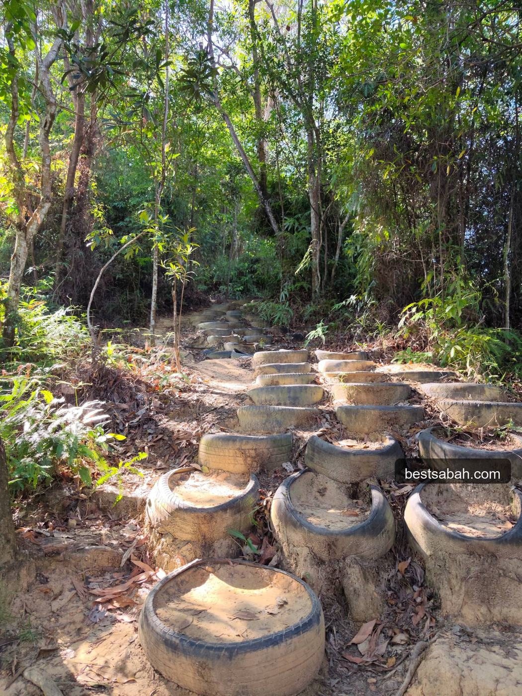
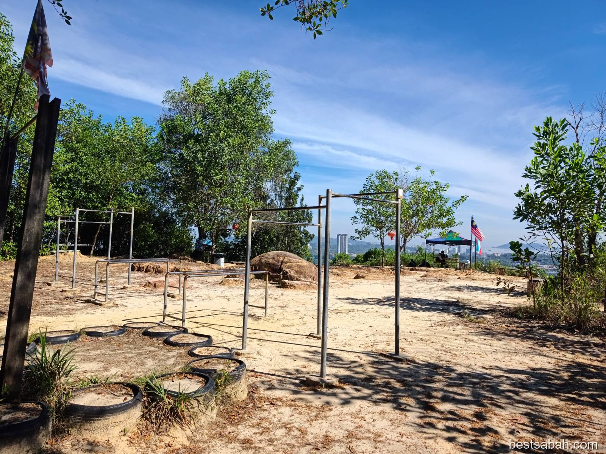
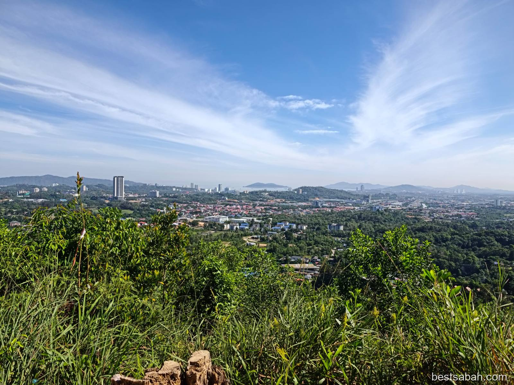

June 2026
Hiking Bukit Padang: Best Free Thing to Do in Kota Kinabalu
Free, no booking, about 40 minutes to the top. Locals hike here all the time. If you're visiting KK, staying here, or you've just never gone, this one is worth it.

The Park
The trail is inside Taman Botani Tun Fuad Stephens Sabah, the botanical garden in Bukit Padang. Big entrance arch, easy to find. Free to enter, there's parking.

Before you get to the trail, you walk through the park grounds. There's a lake, a boardwalk, some gazebos. Nice place. A lot of people come here just to chill, walk around, or jog. It's a popular morning spot for locals. You don't need to hike if you just want some fresh air and green.

The lake area before the trail starts. Already a nice place on its own.
If you're here for traveling, on a study stint, or you're an expat who's been in KK a while and somehow never done this, I really recommend it. It's one of those places locals go all the time but visitors often don't know about.
The Trail
Follow the path until you reach the start of the actual hiking trail. The moment you step in, it feels different. The air gets cooler. It smells different. The noise from outside drops. You're in proper forest.

The steps are made from tree roots. Not built steps, not concrete. The roots have grown across the path over the years and that's what you climb on. Natural steps the whole way up.
It's not technical. No ropes, no scrambling. Just big steps, uphill, the whole way. Your legs will feel it. It burns, especially the first time. Just keep going lah.
The Cat Houses
Further up the trail you'll notice something a bit unexpected. There are wooden platforms built up into the trees, like little elevated shelters, with ladders going up to them. Those are cat houses. People have set them up along the trail to look after the cats that live up there.

Cat houses along the trail. Only in Sabah.
You'll see a few of these on the way up. Keep an eye out.
After that, the path uses old tyres stacked into the ground as steps. Really creative honestly.

Tyre steps. Works though.
The Top
When you come out of the forest at the summit there's a big open sandy area. Monkey bars, pull-up bars, exercise equipment. If you still have energy left after the climb, go for it. No judgment either way.

A lot of people do this trail for months before attempting Mount Kinabalu. It's not really the same thing at all, but it gets your legs used to climbing. Better than nothing lah.
Then just turn around and look at the view.

KK from the top. You can see the bay, the islands, all the way out.
There's a feeling you get when you're up high like this. Hard to put into words. You feel very small, but very alive at the same time. You know what I mean. The view is really nice.
Go in the morning when it's cool, or later in the afternoon. Midday is hot and the open sections will cook you.
Wear proper shoes. The trail is all roots and loose ground. Slippers are a bit dangerous here. Learned that the hard way.
Free entry. No payment, no booking, no registration. Just show up at Taman Botani Tun Fuad Stephens and walk in.